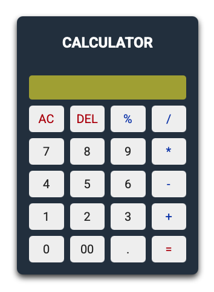

Olá sou o João Marcio Desenvolvedor Fullstack
Desenvolvedor web full-stack com experiência em desenvolvimento de aplicações web escaláveis e responsivas. Sou apaixonado por criar soluções tecnológicas que resolvem problemas reais e que agregam valor aos usuários.
Saiba Mais!Além do código: quem sou eu?
Desenvolvedor fullstack apaixonado por tecnologia e soluções criativas
Olá, eu sou João Marcio, um desenvolvedor fullstack apaixonado por tecnologia e soluções criativas. Tenho trabalhado com diversas tecnologias e plataformas para criar soluções robustas e escaláveis que atendam às necessidades dos clientes.
Eu amo o desafio de encontrar soluções inovadoras e criativas para problemas complexos e estou sempre buscando aprender e crescer como profissional.
Minha caixinha de ferramentas
Descubra as habilidades e ferramentas que domino e que me permitem criar soluções criativas e funcionais para meus clientes.
-

Java Script
-

PhP
-

MySQL
-

Bootstrap
Projetos em Destaque
De ideias abstratas a projetos bem-sucedidos, aqui estão alguns dos meus trabalhos mais recentes
-

Calculadora
Calculadora, ferramenta usada para fazer contas matemáticas. Ela realiza operações como soma, subtração, multiplicação e divisão. Pode ser feita em programas para facilitar e automatizar os cálculos.
Saber mais → -

Site de banda
Este projeto é um site dedicado a uma banda musical, criado para reunir e apresentar todas as informações importantes aos fãs e visitantes. O site inclui a história da banda, perfis dos membros, discografia com detalhes dos álbuns e músicas, além de um formulário de contato para mensagens. O design é pensado para oferecer uma navegação simples e agradável.
Saber mais → -

Mario Jump
Este projeto é um jogo simples de plataforma, inspirado no Dino do Chrome, criado para ajudar o jogador a relaxar e passar o tempo. O personagem corre automaticamente e deve pular obstáculos no caminho, em um cenário com visual do Mario Bros. Sem objetivo.
Saber mais →